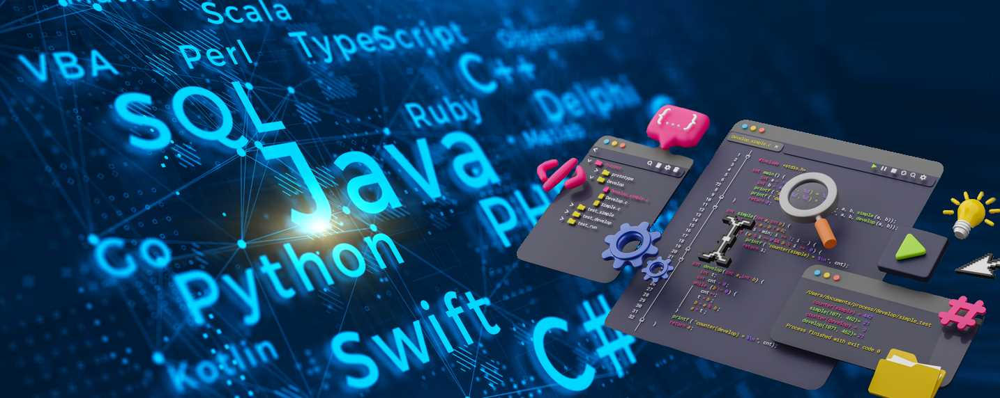
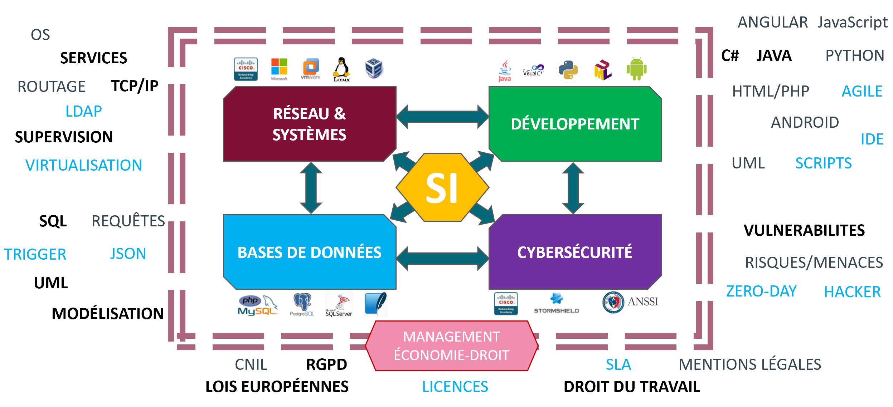
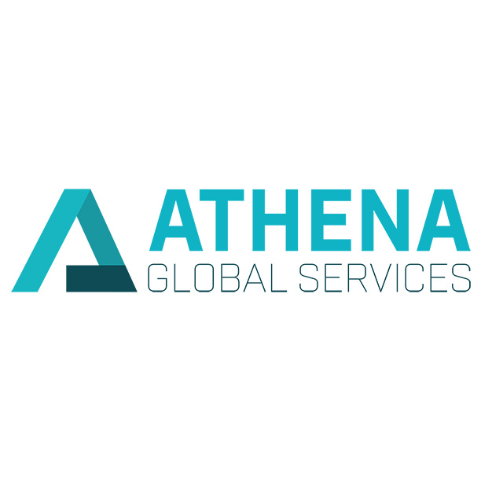
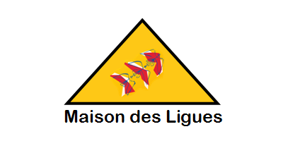
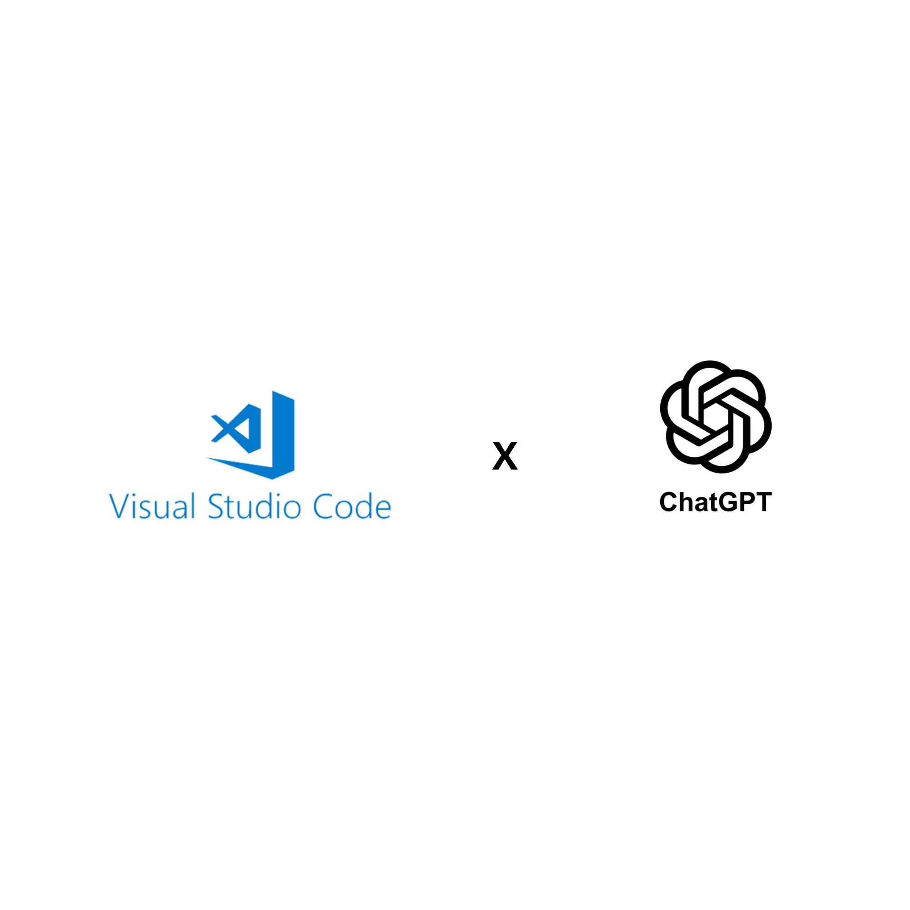
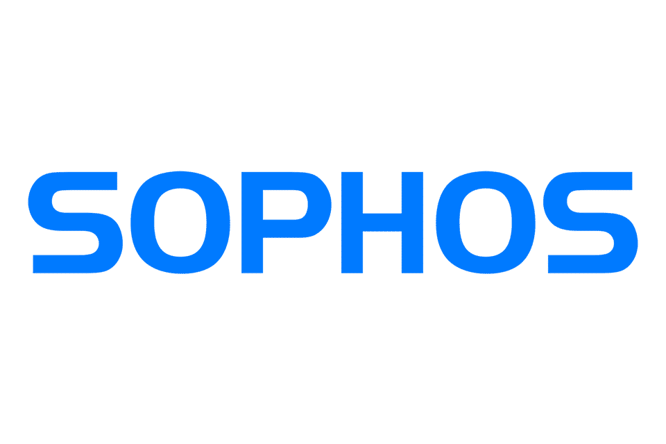

À propos de moi
Actuellement étudiant en BTS SIO (Services Informatiques aux Organisations), option SISR (Solutions d’Infrastructure, Systèmes et Réseaux), je suis passionné par le monde de l’informatique et plus particulièrement par l’Administration des Systèmes et la Cybersécurité. Rigoureux, curieux et motivé, je cherche sans cesse à approfondir mes compétences techniques à travers des projets personnels et professionnels.
Compétences techniques
Parcours
Bac Pro SN – Lycée Christophe Colomb
2021 – 2024Baccalauréat Professionnel en Systèmes Numériques (Option RISC : Réseaux Informatique et Systèmes Communicants). Première approche des environnements technologiques et connectés.
BTS SIO – Ensemble Sainte Marie
2024 – 2026Formation en cours sur les Services Informatiques aux Organisations, avec une spécialisation en Solutions d'Infrastructure, Systèmes et Réseaux (SISR).
Licence Générale Informatique Réseaux & Cybersécurité - Ecole Le Rebours
Prévu : 2026 – 2027En alternance à Le Rebours. Je souhaite poursuivre mes études après le BTS SIO pour approfondir mes compétences en administration système, réseaux et cybersécurité.
BTS SIO
Le BTS Services Informatiques aux Organisations (SIO) forme des spécialistes capables de concevoir, maintenir et sécuriser des solutions informatiques au service des entreprises. Deux options sont proposées selon le parcours choisi :
Option SISR
L’option SISR (Solutions d’Infrastructure, Systèmes et Réseaux) forme à la mise en place, la maintenance et la sécurisation des réseaux et serveurs d’entreprise.
- Administration systèmes et réseaux
- Cybersécurité et virtualisation
- Déploiement de solutions d’infrastructure

Option SLAM
L’option SLAM (Solutions Logicielles et Applications Métiers) forme à la conception, au développement et à la maintenance d’applications logicielles ou web.
- Développement d’applications web et mobile
- Analyse et conception de bases de données
- Gestion de projets et méthodes agiles

Objectifs du BTS SIO
Le BTS SIO permet d’acquérir des compétences techniques solides, une approche orientée projet et une connaissance du monde professionnel grâce aux stages en entreprise.

Débouchés du BTS SIO
Les diplômés peuvent devenir Technicien Réseau, Administrateur Systèmes, Développeur Web, Analyste Programmeur ou encore poursuivre en Licence ou Ecole d’Ingénieur.
Stages
Découverte de l'infrastructure et Support Technique.
- ...
- ...
Optimisation, Virtualisation et Sécurisation du SI.
J’ai effectué mon stage dans l’entreprise Athena Global Services, qui dispose d’une équipe IT responsable de la gestion et du maintien des systèmes informatiques de l’entreprise. L’équipe assure le support technique, la maintenance des ordinateurs et serveurs, ainsi que la sécurité informatique.
- Virtualisation : Migration ou création de VM sur Proxmox/ESXi
- Mise en place d'un Active Directory (DNS, DHCP, LAPS)
- Supervision (Centreon)
- Solution de sauvegarde (Veeam)
- Installation et configuration de Firewall (Sophos)

Mes Réalisations
Voici quelques-uns de mes projets réalisés durant mon BTS SIO.

Projet : MDL (Maison des Ligues)
Ensemble de missions techniques liés à notre spécialité.
Projet : Configuration et déploiement d’une infrastructure virtualisé
Projet réalisé en autonomie durant mon stage de première année de BTS SIO.
Projet Running Hightech
Mise en place d'une petite infrastructure sous Windows Server 2016.

Création de mon portfolio en ligne.
Création de mon portfolio sur Visual Studio Code en HTML
Configuration PROXMOX
Déploiement d’un environnement avec supervision durant ma période de stage chez AGS.

Configuration SOPHOS
Installation et configuration de routeurs Sophos XGS2100 (Firewall)
Veille Technologique
Voici un aperçu de ma veille technologique sous forme de présentation dans le thème de La Cryptomonnaie.
Veilles Cybersécurité
Voici un aperçu de ma veille Cybersécurité sous forme de présentation dans le thème de La Cybersécurité en lien avec les Cryptomonnaies
Mes Certifications
Voici quelques-unes des certifications que j’ai obtenues durant mon parcours en informatique et en cybersécurité.

Le RGPD et ses Notions Clés.
Certification réseau reconnue mondialement, portant sur la configuration et la gestion d’infrastructures réseau.
2024
Les Principes de la Protection des Données.
Formation sur la sécurité des systèmes d’information, la prévention des attaques et la gestion des incidents.
2024
Les Responsabilités des Acteurs.
Introduction aux services cloud et à la gestion des infrastructures sur la plateforme Azure.
2024
Le DPO et les Outils de la Conformité.
Certificat de compétences en HTML, CSS et JavaScript, avec un focus sur le responsive design.
2024
Les Collectivités Territoriales.
Certification en sécurité réseau, cryptographie, analyse des menaces et gestion des accès.
2024
Certification PIX
Maîtrise des informations, des données, de la collaboration ou encore de la création de contenu.
2026Contact 📬
Je suis toujours ouvert aux opportunités, collaborations ou échanges autour de l’informatique, de la cybersécurité et des nouvelles technologies.
Voici mes coordonnées professionnelles :